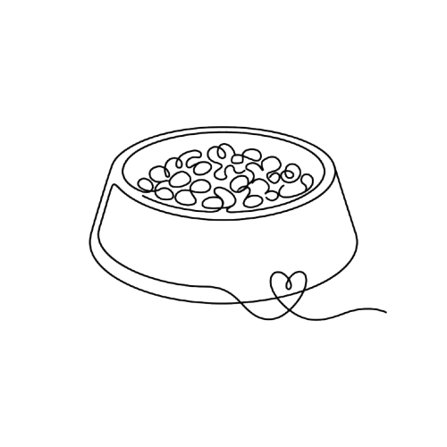
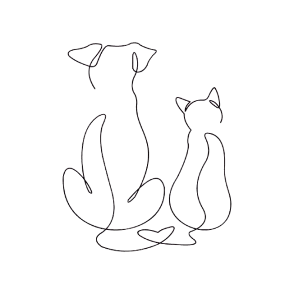

¿Qué hacemos?

Sectorizamos y Alimentamos
Organizamos voluntarios por sectores para expandir nuestros puntos de comida canina y felina, asegurando que el alimento diario llegue de forma limpia y ordenada a cada rincón de la comunidad.

Fomentamos la Adopción Responsable
Promovemos la adopción directa desde las calles, conectando a los voluntarios que los cuidan en sus sectores con familias responsables dispuestas a darles un hogar definitivo.